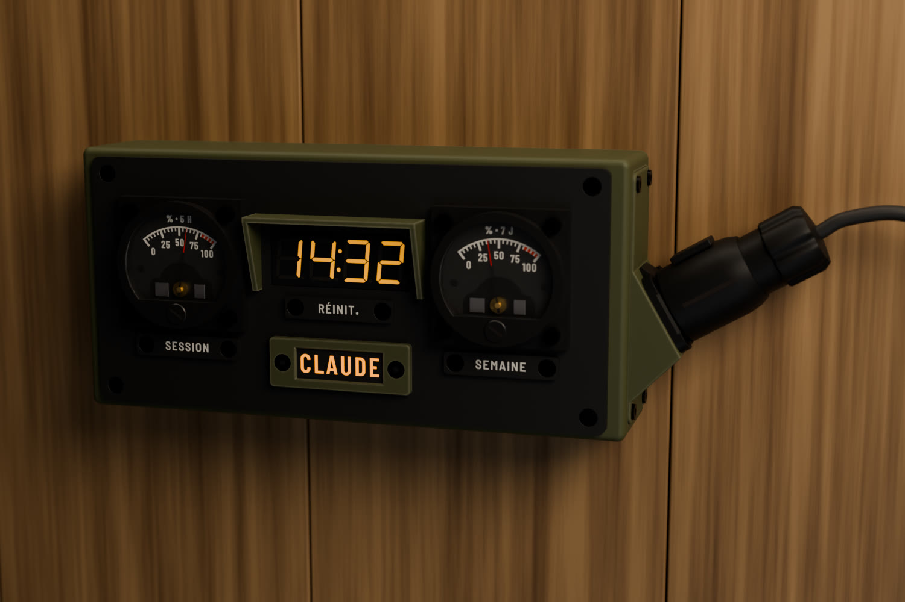
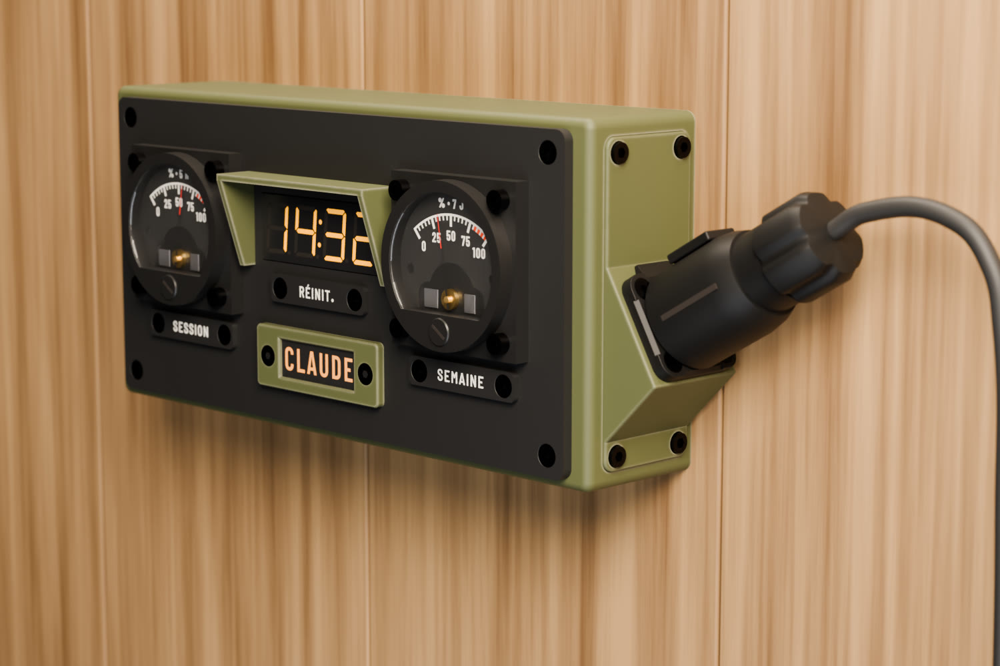
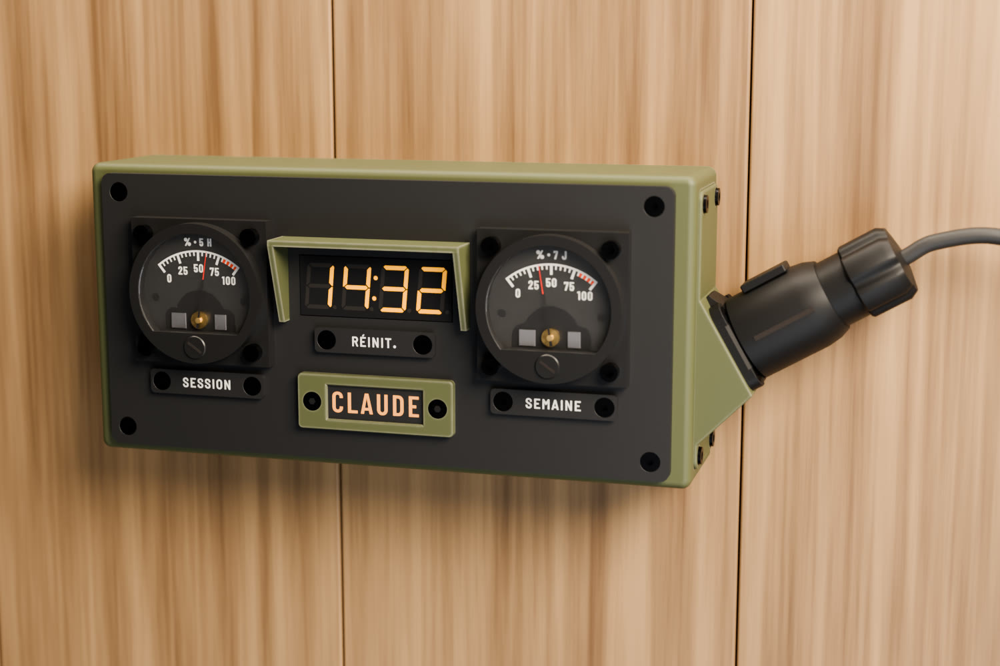
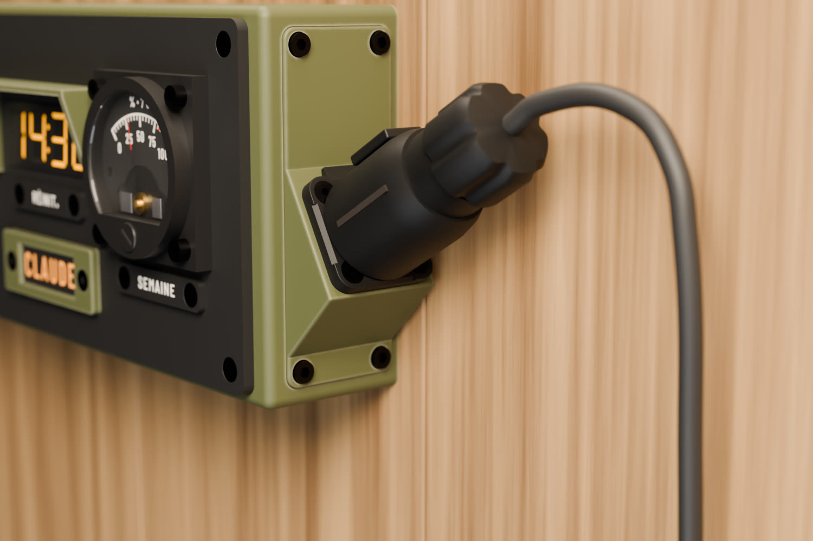

CLAUDEMÈTRE
SESSION
62
% · 5 H
SEMAINE
38
% · 7 J
RÉINIT.
Le soir, voyant animé au rythme du firmware.
AMBRE
Un agent travaille : respiration de 3,2 s, 100 → 35 → 100 %
ROUGE
Un agent attend une réponse : 1 Hz

Le soir, voyant animé

Trois quarts

De face

Connecteur